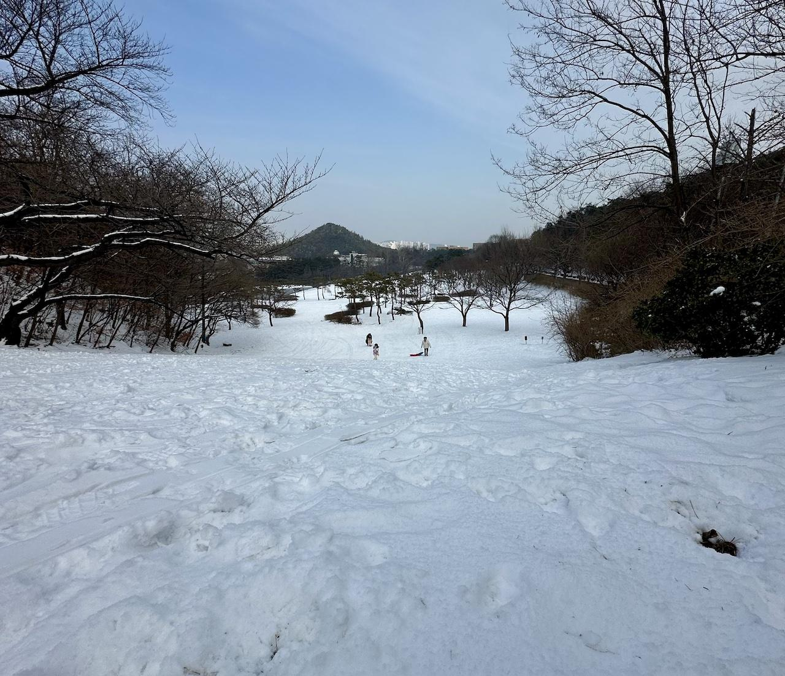

서울대 눈썰매장(?) 체험기
 서울랜드 아니다. 서울대학교다.
얼마 전, 간만의 폭설과 자녀들의 원성을 맞이하여 서울대에 눈썰매를 타러 다녀왔다. 아니 잠깐? 엥? 서울대? 서울대학교? 라고 묻느냐면 그게 맞다.
사실 아는 사람은 아는 나름 유명한 서울대의 눈썰매 스팟이 있다. 애초에 서울대가 산 위에 있는데 이 장소는 거기서도 꽤나 높고 경사진 공터다. 여기에 눈이 충분히 쌓이면 고고도라 도심에 비해 잘 녹지도 않고 참 눈썰매 타기에 적절한 장소가 된다. 넓이도 상당한 터라 눈썰매를 제대로 조종만 하면 꽤 오래 미끄러져 내려갈 수 있었다. 굳이 추천하자면 큰 썰매가 유리하니 알아두자.
어쨌거나 아는 사람을 통해 알게 되어 다녀왔지만 자세한 위치 등은 글에서는 밝히지 않는게 맞을 것 같다.
서울대에 눈썰매를 타러 가는 건 그다지...
솔직히 즐거웠던 것은 사실이다. 이렇게 광활하고 조용한 눈썰매장이 어디 있을까. 아이들도 신나고 부모들은 바람도 쐬고 그리고 힘...들...고....
하지만 중요한 점은 여기는 학교다는 점을 빼먹으면 안 될 것 같다. 그것도 대한민국에서 탑으로 꼽히는 학생들이 모여있는 곳이다. 당연하겠지만 조용히 해야하는 곳이다. 만약 외부 사람이 늘고 소음이 심해지면 외부인은 자유롭게 드나들 수 없는 곳이 될 수도 있다. 다녀왔을 때는 마침 방학 중이고 토요일이라 학생들이 거의 없었긴 했지만 아예 없는 것은 또 아니었으니 신경이 좀 쓰이기도 했다.
그 외에도 여러가지 고민해야 할 요소들이 많다.
일단 산 위라는 점은 꽤 큰 걸림돌이다. 안 그래도 엄청난 규모의 부지라서 걸어서 가는 건 포기해야 할 수준이다. 물론 스팟을 올라가는 곳 바로 앞까지 버스가 다닌다. 하지만 큰 눈썰매를 들고 버스를 타기엔 부적절할 지도 모른다. 거기다 아이들까지 동반한다면 버스는 사실상 불가능한 이동수단에 가깝다.
심지어 버스정류장이나 주차장에서 내려서 스팟까지 올라가는 것도 꽤 힘들고 위험할 수도 있다. 여기까지 아이들을 데리고 올라가는게 쉬운 일은 아닐 거다. 실제로 아이들을 데리고 올라가던 도중 힘들기도 했고 약간 위험하다는 생각이 들기도 했다.
당연하지만 여긴 눈썰매장이 아니다. 관리 인력도 관련 시설도 아무 것도 없다. 언덕에 올라가는 걸 도와줄 이도 시설도 당연히 없다. 충돌 위험을 관리해 줄 사람도 당연히 없다. 차가 미끄러져도 도와줄 사람이 없다. 주차를 유도해 주는 사람도 당연히 없다. 주차장도 당연히 근처에 없고 거기다 좁다. 거기다 스팟 주변에 야외 공연장이 있는데 거기에 떨어지거나 하면 꽤 다칠 지도 모른다.
무료일 것 같지만 주차비용이 발생하는데 학교라서 만만하게 보기에는 생각보다 만만치 않았다. 한 시간에 대충 5천 원 정도 나온 것 같다. 다만 전기차나 하이브리드차 같은 친환경차는 50% 할인이 된다. 전문 눈썰매장 비용에 생각하면 그래도 꽤 저렴하긴 하지만 어차피 여긴 눈썰매장이 아니라 학교니 비교하기가 힘들다.
화장실이나 간식은 근처에 제법 크고 깔끔한 카페가 하나 있어서 여길 이용할 수는 있다. 하지만 구매 없이 화장실만 이용하는 건 좀 그렇고 특히나 눈이 묻은 발로 들어가기엔 좀 많이 미안할 듯하다. 거기다 자주 가기엔 무리일 정도로 스팟에서 좀 멀다.
대충 이 정도로 정리할 수 있을 것 같은데, 장점에 비해 단점이 확실히 많을 수밖에 없는 것 같다.
결론
서울대에 눈썰매를 타러 가는 것은 만약 주변 사람을 통해 알고 있었다면 조용할 때 그리고 모든 일에 자신이 책임을 질 수 있을 때 한 번 가보는 건 나쁘지는 않을 것이다. 무엇보다 학교라는 사실은 잊지 말았으면 좋겠다.
그렇다면 왜 이딴 글을 쓰느냐고 할 수 있는데 그저 일기 수준에 가까운 글이라고 이해하면 될 것 같다.